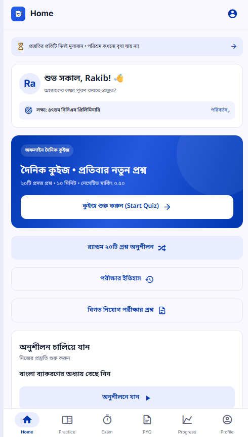
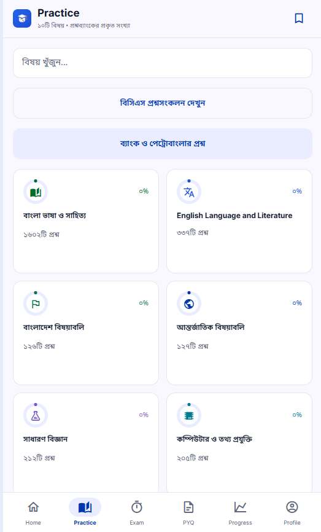
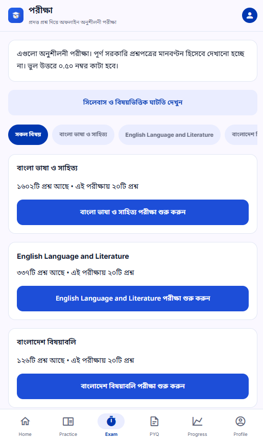
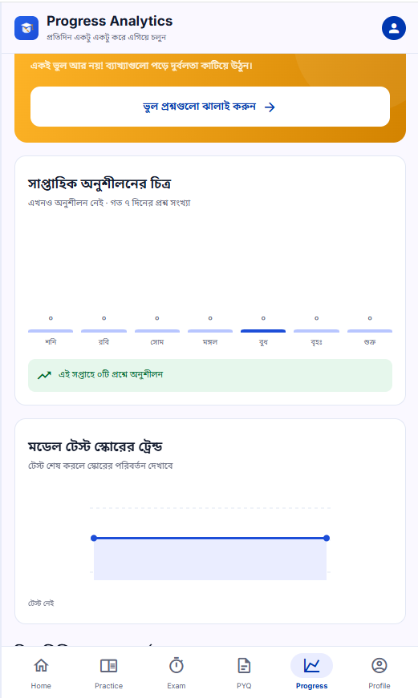
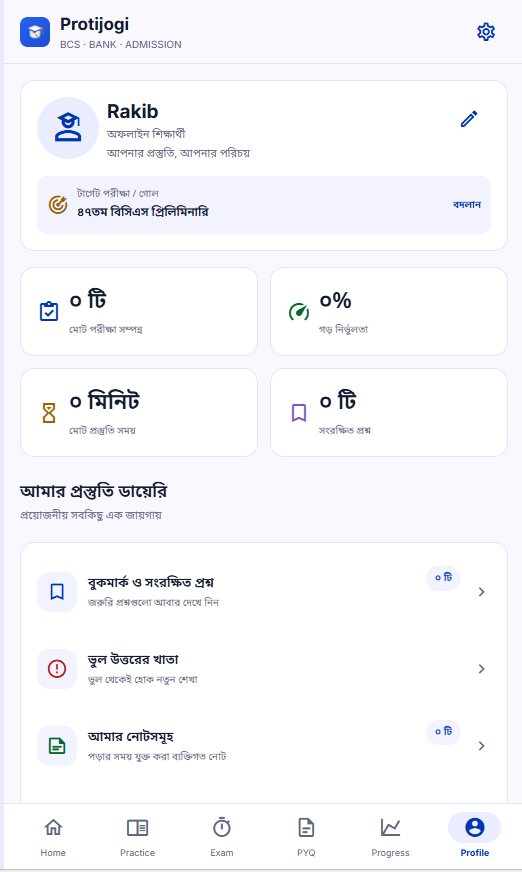

Shuffle choices without changing scoring
Each attempt can display answer options in a different order while keeping the original answer indices for scoring and review.
MOBILE / JOB EXAM PREPARATION
An offline-first mobile app for candidates preparing for BCS, bank, Petrobangla and other job examinations in Bangladesh.
Active development · testing in progress

01 / THE PROBLEM
Candidates preparing for Bangladesh job examinations need a way to practise questions, review explanations and track their preparation from one place, including when studying offline.
02 / ENGINEERING HIGHLIGHTS
Implemented a data-driven quiz system that preserves canonical answer indices while shuffling displayed options. Added persistent exam drafts, historical answer review, repeat-aware question selection and three-day performance analysis. Separated question content from presentation and used automated tests to validate scoring, navigation and local persistence.
Each attempt can display answer options in a different order while keeping the original answer indices for scoring and review.
Question selections, answers and timing are saved locally so an unfinished practice or exam can continue after the app is reopened.
Saved answer history supports solution review, mistake revision and three-day performance comparisons on the same device.
03 / IMPLEMENTED FEATURES
04 / FROM THE APP
Swipe, drag, or use the arrows to browse screenshots.




05 / RESULT & SCOPE
Protijogi brings subject and chapter practice, timed tests, answer review and personal progress tools into a locally stored mobile application. It remains in active development and testing; Play Store publication is pending.
Active development and testing are ongoing. A desktop web preview is available, and Android builds have been tested during development. Play Store publication is pending. Study records are stored locally without an account or cloud sync. The GitHub repository is private.
Private GitHub repository ↗